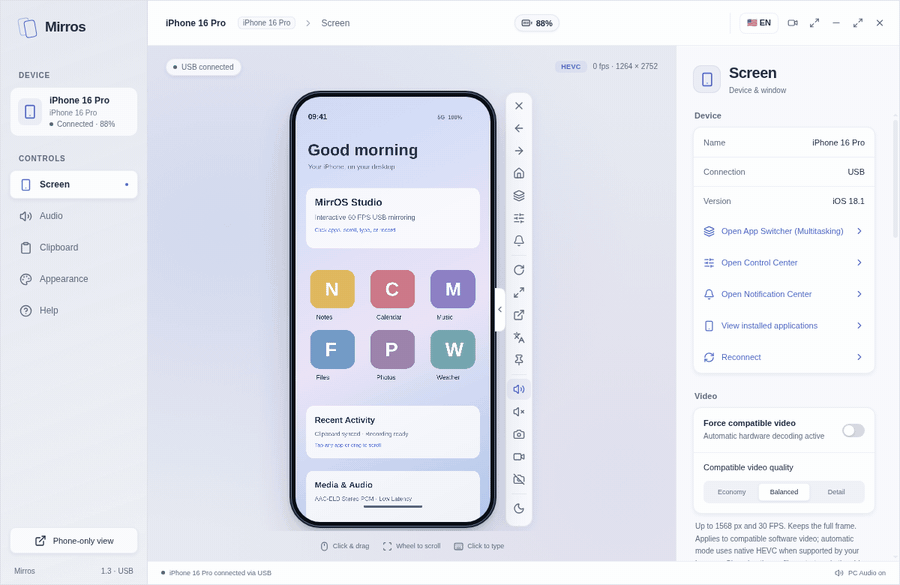
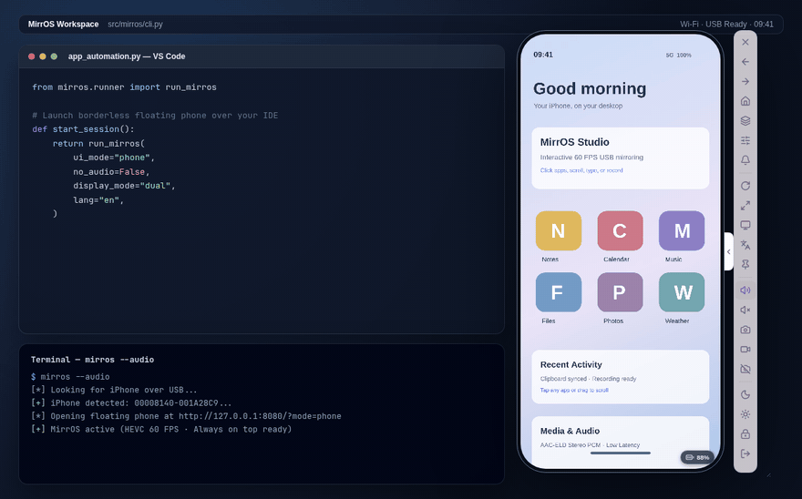
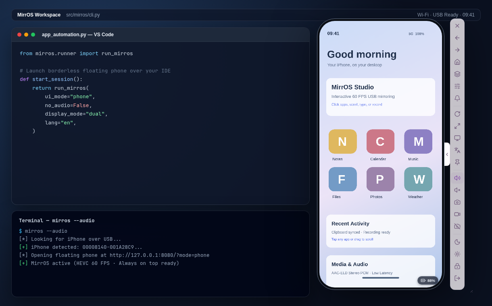
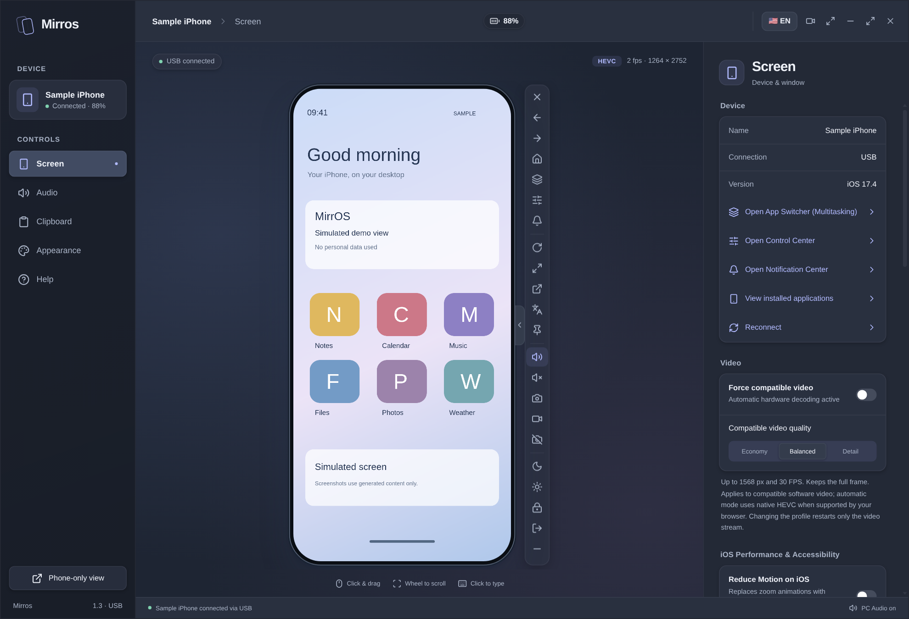
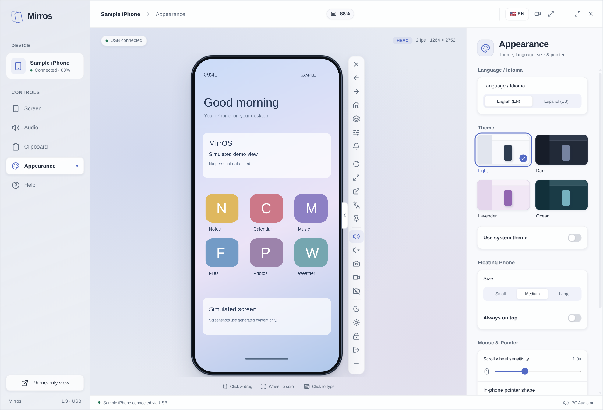
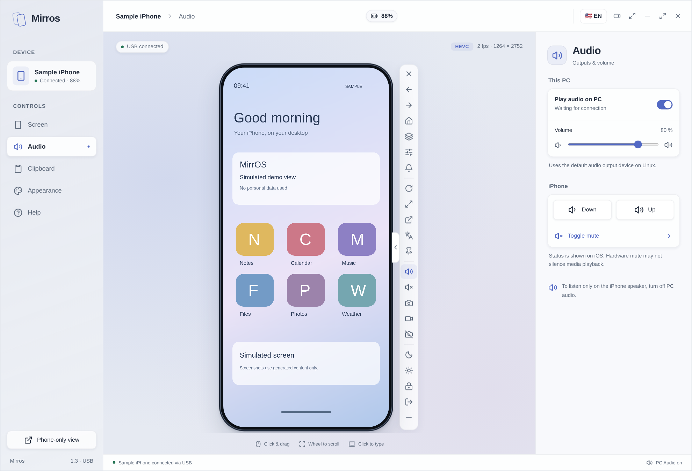
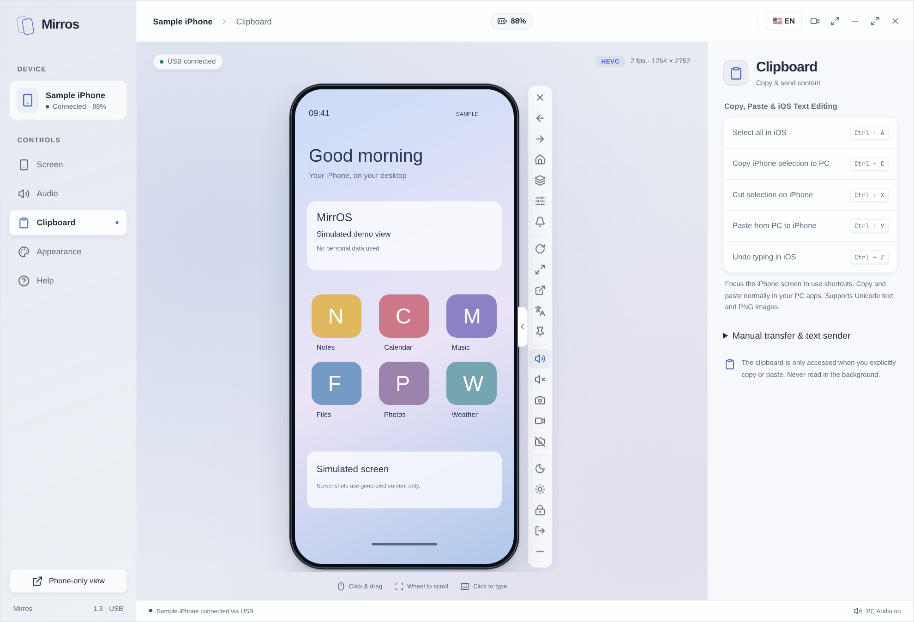
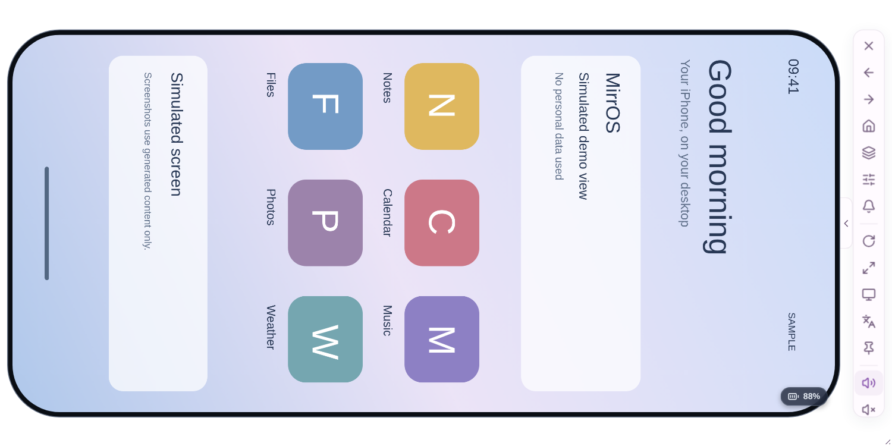
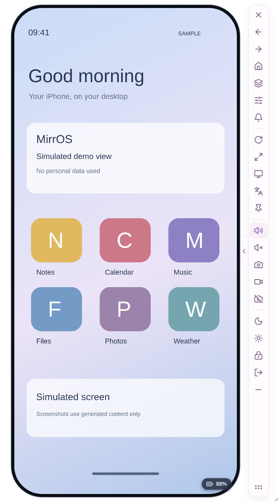

60 FPS HEVC Video + Software Fallback
Leverages native Chromium WebCodecs HEVC hardware decoding with RVRA resolution-tier padding detection, and automatically switches to the PyAV software decoder (Economy, Balanced, Detail) when needed.
MirrOS is the open-source scrcpy-like experience for iOS: 60 FPS HEVC video, real-time audio, USB HID touch gestures, App Switcher multitasking, screen recording, keyboard, and bidirectional clipboard between your iPhone and PC.

Built to work without Jailbreak over the official iOS 17.4+ USB developer transport.
Leverages native Chromium WebCodecs HEVC hardware decoding with RVRA resolution-tier padding detection, and automatically switches to the PyAV software decoder (Economy, Balanced, Detail) when needed.
Accurate normalized touch, long-press hold preservation, proportional mouse-wheel scrolling, 1-click Control Center, Notification Center, and Home gestures, plus a customizable cursor (arrow, circle, or dot).
Open the iOS App Switcher with Ctrl+M or the toolbar button, browse and launch installed iPhone apps, and record 60 FPS video + audio (Ctrl+Shift+R) or PNG screenshots (Ctrl+P).
Type directly from your PC keyboard with iOS editing shortcuts (Ctrl+A, Ctrl+C, Ctrl+X, Ctrl+V, Ctrl+Z) and transfer Unicode text or PNG images in both directions between PC and iPhone.
Stream iPhone audio to your PC with an adaptive low-latency AudioWorklet buffer, and use the iPhone Camera & Microphone seamlessly via the DVT live viewfinder bypass.
Launch directly in a compact, borderless Floating Phone window (CLI & Desktop) or expand into the full Studio workspace, with AOD Standby Mode so the physical iPhone screen rests.
Interactive desktop multitasking, four built-in themes (Light, Dark, Lavender, and Ocean), collapsible side controls, and instant EN/ES language switching.








Zero-jailbreak iPhone mirroring tailored for developers, QA testers, content creators, and everyday desktop multitasking.
Standalone portable .exe with bundled Python + Electron, hardware HEVC decoding via Chromium WebCodecs, and SHA-256 verified in-app updates.
AppImage, .deb, and native CLI tested on Arch, Ubuntu, Fedora, and Debian — including automatic PyAV software decode fallback and native wl-clipboard sync on Wayland.
Pin the borderless phone over any IDE or video call, launch installed iOS apps from CLI, export anonymized diagnostics, and record 60 FPS WebM/MP4 clips in one shortcut.
mirros / ios-scrcpy)In addition to standalone portable builds, you can install and launch MirrOS directly from the terminal on Linux and Windows.
# Install and diagnose USB connection
git clone https://github.com/Cristiant2608/mirros.git
cd mirros
./setup.sh
mirros --diagnose
# Launch floating phone view with audio
mirros --audio
# Open full Studio panel or force software decoding
mirros --studio
mirros --force-software --video-quality economy
# List installed apps or open the iOS App Switcher
mirros --list-apps
mirros --app-switcherDownload the portable MirrOS executable (.exe on Windows or .AppImage on Linux), connect your iPhone with a USB data cable, tap 'Trust This Computer', and enable Developer Mode in Settings → Privacy & Security. On Windows you need Apple Mobile Device Service (included with Apple Devices or iTunes) and on Linux the usbmuxd service.
No. MirrOS uses the built-in developer services in iOS 17.4+ and iOS 18 via pymobiledevice3, requiring no Jailbreak, no third-party iOS app, and no paid Apple Developer account.
Both the MirrOS app and this website start in English by default and include a 1-click EN / ES language toggle in the header, floating toolbar, and Appearance settings.